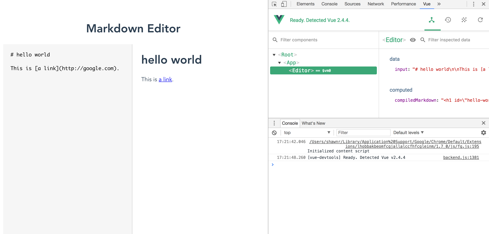

Using Vue Devtools
One of the helpful aspects of Vue.js is that there is a specialized tool called Vue Devtools that we can use to help us debug our Vue.js applications. Vue Devtools can be installed in Chrome, Firefox, or Safari (via a workaround), and it is incredibly useful for debugging applications.
Install Vue Devtools for your browser of choice:
Once you have installed Vue Devtools into your browser, you can test the tool by loading your Vue project. Open the Developer Tools panel in your your browser and you should see the Vue Devtools tab available. (Consult the documentation for the specific browser you are using if you have trouble finding this tab.)

Vue Devtools in action.
When we bring up the Vue Devtools tab, we can inspect the Vue application to see the current values of all the components we've defined in our application. In the example screenshot above, we can see that we have one component (the Editor) and it has a single data value. This data value can be changed by typing into the editor textarea, and the changes will be computed and reflected on the right side of the screen. We can see how the Vue Devtools information updates in real-time as we type.
Vue Devtools updating values as they are changed.
The updates to any value in the context of our application components is almost immediately reflected in our Vue Devtools tab. We can easily see how data is moving and transforming through our application, which assists with debugging and development.
The Vue Devtools offers additional insights into how our apps are functioning that will be more useful when we broaden our understanding of the framework. It will track events in real-time as they are signaled, and it will show us the full history of the state management tool, Vuex.
These are powerful features for debugging our Vue.js apps, and Vue Devtools is a major reason why developers enjoy their experience with Vue.js. We will make good use of Vue Devtools throughout this book, so be sure to get it installed and test it out with some simple projects. When things go wrong in our apps, we will want to look at Vue Devtools to help us figure out how to fix it.